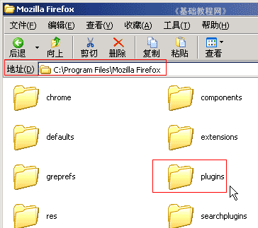
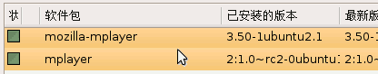
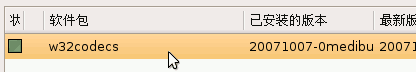
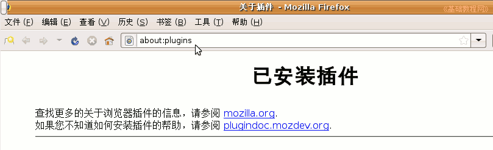

Firefox3 基础教程
作者：TeliuTe 来源：基础教程网
八、音频插件 返回目录 下一课播放音乐多媒体，需要安装相应的播放器和解码器，网页一般是调用它们来播放，如果找不到播放器，就会提示安装插件；
社区下载：http://addons.sociz.com/firefox/plugins/
官方下载：https://addons.mozilla.org/zh-CN/firefox/browse/type:7
1、Windwos 媒体插件（Windows系统下）
1）主要是播放wma、wmv格式的音频视频文件，安装WMP播放器后，一般可以自动识别；
2）也可以手动安装，将所需的文件自己复制到Firefox文件夹中，压缩包大小187KB；本地下载：plugins.7z（文件来自Sociz 论坛），这是一个压缩包文件，解压后得到一个plugins的文件夹(它里面的文件不要解压)，
打开这个plugins文件夹，全选后点“复制”，然后打开Firefox的安装文件夹（在桌面图标上点右键选“属性－查找目标”），打开里面的plugins文件夹，粘贴即可；

重启Firefox后，就可以播放这些音乐格式；
2、QuickTime媒体插件
1）安装QT插件后，大多数网页中的媒体文件都可以播放；
2）电脑之家下载：http://download.pchome.net/multimedia/media/download_15158.html，下载后解压得到安装文件，
运行安装文件，按提示一步一步安装完成；
3、Realplayer插件
1）安装Realpalyer播放器后，就可以自动识别，一般不需要再特别进行安装；
4、Ubuntu 系统音频插件
1）进入新立得，搜索 mplayer ，找到 mozilla-mplayer 和 mplayer ，
选中后点右键，选“标记以便安装”，然后点工具栏的“应用”按钮即可；

2）安装 w32codecs ，在新立得中搜索，然后选中安装即可；

也可以到官方下载 deb 安装包，下载以后运行安装包即可；
下载地址：http://www.debian-multimedia.org/pool/main/w/w32codecs/
4）插件安装好以后，可以打开Firefox窗口，在地址栏中输入 about:plugins 然后按回车或点“转到”按钮，查看安装的插件情况；

本节学习了音频插件的基本操作，如果你成功地完成了练习，请继续学习下一课内容；
本教程由86团学校TeliuTe制作|著作权所有
基础教程网：http://teliute.org
美丽的校园……
转载和引用本站内容，请保留作者和本站链接。